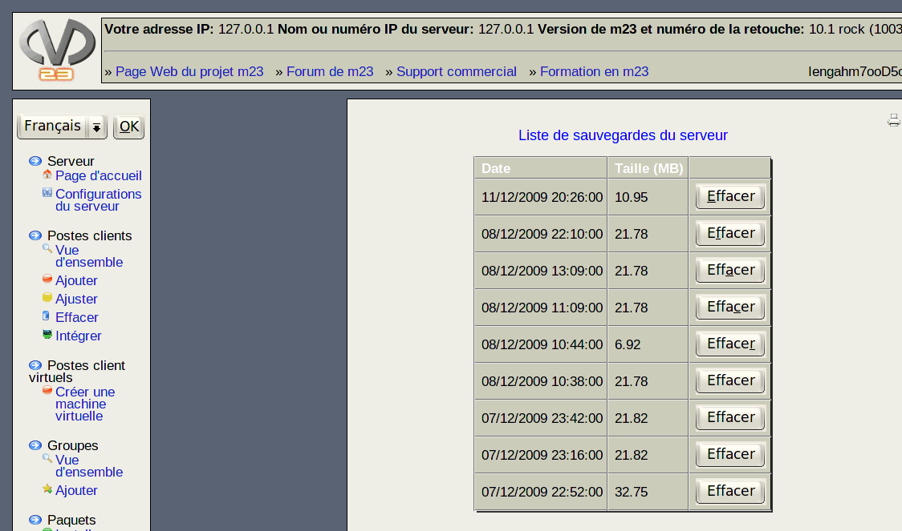

La liste des sauvegardes du serveur m23, étant actuellement enregistrées sur ce dernier s'affiche. Vous voyez la taille du fichier et la date de la sauvegarde.

Si vous souhaitez effacer une archive de sauvegarde, cliquez sur Effacer dans la ligne concernée.
Sous-sections
root
2018-01-11